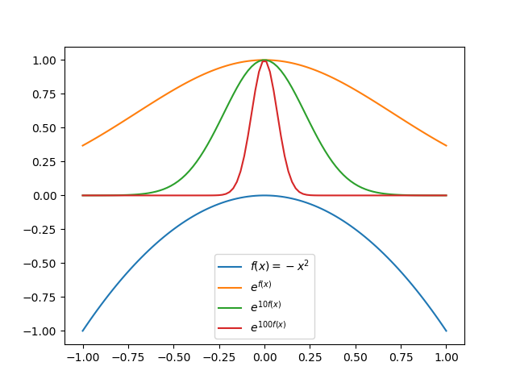

Stationary Phase Approx, Laplace's Method
Laplace's Method
结论
对于积分
$$\begin{align} \int_a^b e^{Mf(x)} \cdot\mathrm{d} x \end{align}$$假设 $f(x)$ 只有一个全局最大值, 位于 $x = x_0 \in (a, b)$ 处. 那么当 $M\gg 0$ 时, 它 可以做如下近似
$$\begin{align} \int_a^b e^{Mf(x)} \cdot\mathrm{d} x \approx \sqrt{\frac{2\pi}{M|f''(x_0)|}} e^{Mf(x_0)} \end{align}$$证明
将 $f(x)$ 在 $x = x_0$ 处 Taylor 展开
$$\begin{align} \int_a^b e^{Mf(x)} \cdot\mathrm{d} x = \int_a^b e^{M\left[f(x_0) - \frac{|f''(x_0)|}{2}(x - x_0)^2 + \cdots \right]} \cdot\mathrm{d} x \end{align}$$其中利用了 $f'(x_0) = 0, f''(x_0) < 0$ .
由于 $f(x_0)$ 是极大值, 且 $M$ 很大, 所以积分主要由 $x_0$ 附近贡献. 下图是 $f(x)= -x^2$ 时的情况, 可以看出 $M$ 越大, 积分的贡献越集中于 $x_{0}$ 处

只保留到展开的二阶项, 略去更高阶, 因此积分近似为
$$\begin{align} \int_a^b e^{Mf(x)} \cdot\mathrm{d} x \approx e^{Mf(x_0)}\int_a^b e^{- M\frac{|f''(x_0)|}{2}(x - x_0)^2 } \cdot\mathrm{d} x \end{align}$$由于远离 $x_0$ 的部分对积分贡献几乎为零, 所以可以将积分区间拓展到 $(-\infty, +\infty)$ , 这样就可以将高斯积分算出, 得到结果
$$\begin{align} \int_a^b e^{Mf(x)} \cdot\mathrm{d} x \approx \sqrt{\frac{2\pi}{M|f''(x_0)|}} e^{Mf(x_0)} \end{align}$$例子: Stirling's Approx
$\Gamma$ function 为
$$\begin{align} N! = \Gamma(N+1) = \int_0^{\infty} \mathrm{d}x\cdot x^N e^{-x} \end{align}$$可以将上式变形
$$\begin{align} N! = \int_0^{\infty} \mathrm{d}x\cdot e^{-x +N\ln x} = \int_0^{\infty} \mathrm{d}x\cdot e^{N\left(-\frac{x}{N} +\ln x\right)} \end{align}$$当 $N$ 很大的时候, 可以进行 Laplace's method 近似. 做变量代换 $x/N = t$ , 那么
$$\begin{align} N! = \int_0^{\infty} \mathrm{d}x\cdot e^{-x +N\ln x} = N^{N + 1}\int_0^{\infty} \mathrm{d}t\cdot e^{Nf(t)} \end{align}$$其中 $f(t) = -t +\ln t$ 如下图

在 $t = 1$ 处有极大值. 因此可以用 Laplace's method 做近似为
$$\begin{align} N! \approx N^{N + 1} e^{-N} \sqrt{\frac{2\pi}{N\cdot 1}} = \sqrt{2\pi N} e^{N(\ln N -1)} \end{align}$$取对数为
$$\begin{align} \ln N! \approx \frac{1}{2}\ln 2\pi + \frac{1}{2}\ln N + N(\ln N - 1) \approx N(\ln N - 1) \end{align}$$最后一步省略了前两项, 因为相比较于后两项, 它们是可以忽略的. 这就是常用的 Stirling 公式.
Stationary Phase Approx
结论
对于积分
$$\begin{align} I = \int_a^b g(t) e^{\mathrm{i}kf(t)} \cdot \mathrm{d}t \end{align}$$称其中的 $f(t)$ 为 phase function. 假如 $f(t)$ 在 $(a, b)$ 内有 $n$ 个 stationary points (也就是一阶导数为零的点) $s_j, 其中 j = 1, 2, \cdots ,n$ 那么当 $k\to \infty$ 时, 有如下近似
$$\begin{align} I \approx \sum_{j=1}^n g(s_j) e^{\mathrm{i}k f(s_j) + \frac{\mathrm{i}\mathrm{sign}[f''(s_j)]\pi}{4}} \sqrt{\frac{2\pi}{k|f''(s_j)|}} \end{align}$$Intuition (不做严格证明)
假设 $f(t)$ 只有一个 stationary point $s_j \in(a, b)$ : $f'(s_j) = 0$ .
将 $f(t)$ 在 $t = s_j$ 处 Taylor 展开
$$\begin{align} I = \int_a^b g(t) e^{\mathrm{i}k\left[f(s_j) + \frac{f''(s_j)}{2}(t - s_j)^2 + \cdots \right]} \cdot \mathrm{d}t \end{align}$$其中利用了 $f'(s_j) = 0$
当 $k\to \infty$ 时, 剧烈振荡, 相互抵消(Coates-Euler formula), 积分主要由 stationary point 处贡献. 只保留到 二阶项, 略去更高阶项, 并且将积分区间拓展到 $(-\infty, + \infty)$ , 就可以得到结论
$$\begin{align} I \approx &\int_a^b g(s_j) e^{\mathrm{i}k\left[f(s_j) + \frac{f''(s_j)}{2}(t - s_j)^2 \right]} \cdot \mathrm{d}t \\ =& g(s_j)e^{\mathrm{i}kf(s_j)} \int_a^b e^{\mathrm{i}k\left[\frac{f''(s_j)}{2}(t - s_j)^2 \right]} \cdot \mathrm{d}t \\ \approx & g(s_j)e^{\mathrm{i}kf(s_j)} \int_{-\infty}^{\infty} e^{\mathrm{i}k\left[\frac{f''(s_j)}{2}(t - s_j)^2 \right]} \cdot \mathrm{d}t \\ =& g(s_j)e^{\mathrm{i}kf(s_j)}\sqrt{\frac{2\pi\mathrm{i}}{k f''(s_j)}} \\ =& g(s_j)e^{\mathrm{i}kf(s_j)}\left[\mathrm{i} \cdot\mathrm{sign}[f''(s_j)]\right]^{1/2} \sqrt{\frac{2\pi}{k |f''(s_j)|}} \\ =& g(s_j)e^{\mathrm{i}kf(s_j) + \frac{\mathrm{i} \cdot\mathrm{sign}[f''(s_j)]\pi}{4}} \sqrt{\frac{2\pi}{k |f''(s_j)|}} \end{align}$$有多个 stationary points 时, 对它们求和即可.
例: Bessel functions 的渐近形式
Bessel functions 的积分表达形式为
$$\begin{align} J_n(x) = \frac{1}{\pi} \int_0^{\pi} \cos (x \sin \theta - n\theta) \mathrm{d}\theta \end{align}$$将其写为指数形式
$$\begin{align} J_n(x) = \frac{1}{\pi} \mathrm{Re}\left[\int_0^{\pi} e^{\mathrm{i}(x \sin \theta - n\theta)} \mathrm{d}\theta\right] \end{align}$$当 $x\to\infty$ 时, 积分可以用 stationary phase approx
$$\begin{align} \int_0^{\pi} e^{\mathrm{i}(x \sin \theta - n\theta)} \mathrm{d}\theta = \int_0^{\pi}e^{-\mathrm{i} n\theta} e^{\mathrm{i}x \sin \theta } \mathrm{d}\theta \end{align}$$$\sin\theta$ 在积分区间 $(0, \pi)$ 内的 stationary points 为 $\theta = \frac{\pi}{2}$ 因此其近似结果为
$$\begin{align} \int_0^{\pi} e^{\mathrm{i}(x \sin \theta - n\theta)} \mathrm{d}\theta \approx& e^{-\mathrm{i} n \frac{\pi}{2}} e^{\mathrm{i} x \sin \frac{\pi}{2} + \frac{\mathrm{i} \cdot (-1)\cdot \pi}{4}}\sqrt{\frac{2\pi}{x \cdot 1}} \\ =& e^{-\mathrm{i} \frac{n\pi}{2}} e^{\mathrm{i} (x - \frac{\mathrm{i} \cdot \pi}{4})}\sqrt{\frac{2\pi}{x}} \end{align}$$代回 Bessel functions 取实部得到
$$\begin{align} J_n(x) \approx& \frac{1}{\pi} \mathrm{Re}\left[e^{-\mathrm{i} \frac{n\pi}{2}} e^{\mathrm{i} (x - \frac{\mathrm{i} \cdot \pi}{4})}\sqrt{\frac{2\pi}{x}} \right] \\ = &\sqrt{\frac{2}{\pi x}} \cos\left( x - \frac{n\pi}{2} - \frac{\pi}{4} \right) , \quad \mathrm{as} \, x \to \infty \end{align}$$Reference
- https://www.youtube.com/watch?v=7PuZQhqkWxk
- https://www.youtube.com/watch?v=b7PZlmorEok
- https://www.math.unl.edu/~scohn1/8423/intasym4.pdf
- Altland Alexander, Simons Ben D., Condensed Matter Field Theory, Second Edition-Cambridge University Press (2010)